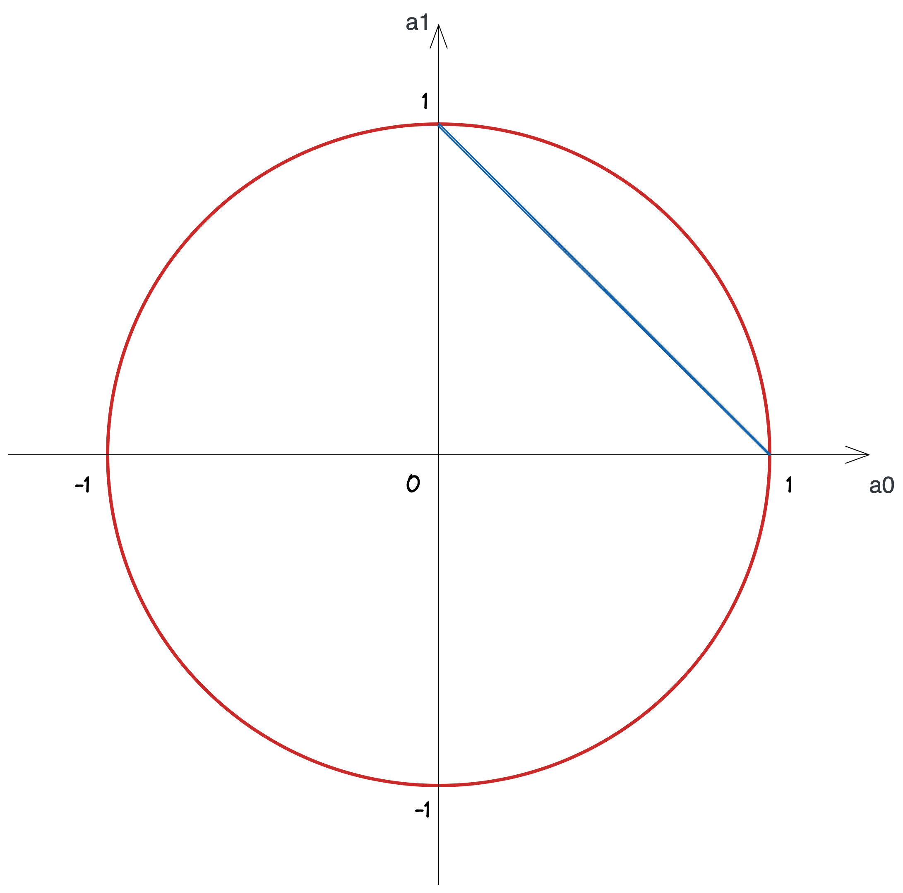

量子ビットは、確率的ビットと非常によく似ています。大きな違いは 2 つだけです。
最初に、確率的ビットが取り得る状態をおさらいしてみましょう
(コイントスの例を使ったことを思い出してください)。 ビットが
0 の状態をコインの表、ビットが
1 の状態をコインの裏とし、それぞれの確率を \(p_0,\ p_1\) とします。
表と裏の確率を足すと必ず 1 になり、またそれぞれの確率は 0 から
1 の間ですから、
$$p_0 + p_1 = 1\qquad (0 \leq p_0 \leq 1,\ 0 \leq p_1 \leq 1)$$
が成り立ち、確率的ビットが取りうるすべての状態を表す次のグラフが得られるのでした。
次は振幅を持つ量子ビットの取り得る状態をグラフにしてみましょう。 振幅は 2
乗すると確率になるのですから、ビットが 0 となる確率の振幅を \(a_0\)、ビットが
1 となる確率の振幅を \(a_1\) とすると、\(a_0^2 = p_0,\ a_1^2 = p_1\) が成り立ちます。
これを先ほどの式に入れると、
\begin{split} &p_0 + p_1 = 1 \\ \\ \Longrightarrow\ &a_0^2 + a_1^2 = 1\qquad (-1 \leq a_0 \leq 1,\ -1 \leq a_1 \leq 1) \end{split}
となり、このグラフは円の形となります。 これを見て分かる通り、量子ビットが確率的ビットに比べて決定的に違うのは、振幅は負の値を持ち得ることです。 ここでは「量子ビットは確率的ビットよりもさらにたくさんの情報を表現できそうだ」ということを視覚的に理解してもらえれば十分です。

実は、振幅は一般には複素数の値を取ります。
ここでは複素数の詳しい説明や計算は省きますが、この場合に量子ビットが取りうる状態を図にすると半径
1 の球表面になります。 これをひらたく言えば、1 量子ビットの状態は地球上のとある 1
点として表せることになります
(島根とか、ニューヨークとか、南極とかあなたの好きな場所をどこでも思い浮かべて OK です)。
そして北極は状態 {% ket 0 %}、南極は状態 {% ket 1 %} にそれぞれ対応します。
量子コンピュータが唯一できるのは、回転をあらわす行列をベクトルに掛けることでした (QPU は何が得意? を参照)。 これを地球で考えると、南極にいるペンギンを球面上の回転の組合わせによって北極や島根県に飛ばすことに相当します。
Qni にはちょうど、この球を表示する「ブロッホ球」という命令があります。これを使って量子ビットのいろんな状態を調べてみましょう。 下の回路には、すでにいくつかの QPU 演算が置いてあります。 ブロッホ球を回路上のいろんな場所に置いてみることで、それぞれの命令がどんな回転を表しているか推測してみましょう。